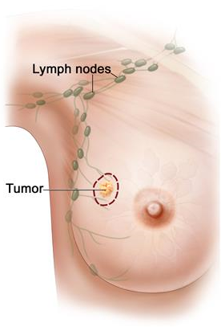

The CAMELYON16 challenge has ended in November 2016
PLEASE CHECK OUT CAMELYON17:
https://camelyon17.grand-challenge.org
Background
Digital
pathology is a new, rapidly expanding field of medical imaging. In
digital pathology, whole-slide scanners are used to digitize glass
slides containing tissue specimens at high resolution (up to 160nm per
pixel). The availability of digital images has garnered the interest of
the medical image analysis community, resulting in increasing numbers of
publications on histopathologic image analysis.
Motivation
 In
this challenge, we will focus on the detection of micro- and
macro-metastases in lymph node digitized images. This subject is highly
relevant; lymph node metastases occur in most cancer types (e.g. breast,
prostate, colon). Lymph nodes are small glands that filter lymph, the
fluid that circulates through the lymphatic system. The lymph nodes in
the underarm are the first place breast cancer is likely to spread.
Metastatic involvement of lymph nodes is one of the most important
prognostic variables in breast cancer. Prognosis is poorer when cancer
has spread to the lymph nodes. The diagnostic procedure for pathologists
is, however, tedious and time-consuming and prone to misinterpretation.
The solution: A challenge to improve the detection of cancer metastasis
Automated
detection of lymph node metastasis has a great potential to help the
pathologist and reduce their workload. Within the past few years, the
field has been moving towards grand goals with strong potential
diagnostic impact: (fully) automated analysis of whole-slide images to
detect or grade cancer, to predict prognosis or identify metastases. As
such, we feel now is the right time to offer a platform for interested
groups to compare strategies and algorithms for this highly meaningful
task in histopathology. This will be the first challenge using
whole-slide images in histopathology. The goal of the CAMELYON Challenge
is to apply an open science approach to develop algorithms to detect
cancer metastasis in lymph node images. Such an approach could improve
the diagnosis of the patients and significantly reduce the workload of
the pathologists.